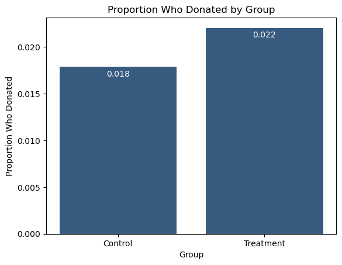
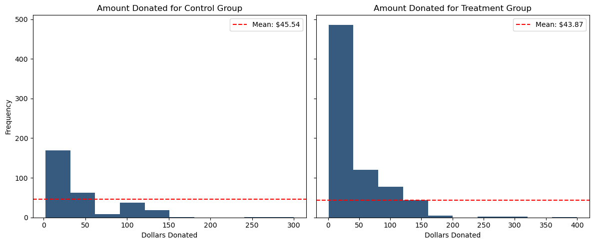
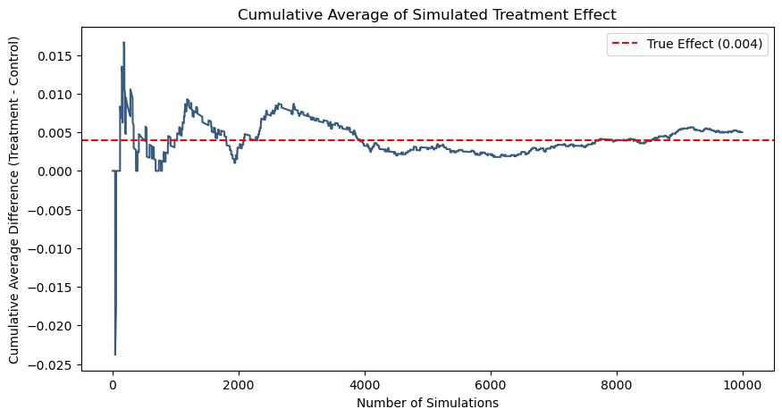
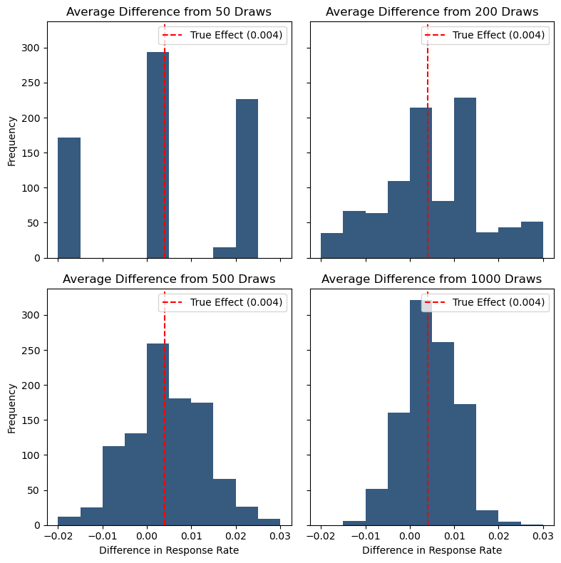

import pandas as pd
import numpy as np
from scipy.stats import ttest_ind, t
import pyrsm as rsm
import matplotlib.pyplot as plt
from cycler import cycler
plt.rcParams['axes.prop_cycle'] = cycler(color=['#375a7f']) School
MGTA495
df = pd.read_stata('karlan_list_2007.dta')df.describe().T| count | mean | std | min | 25% | 50% | 75% | max | |
|---|---|---|---|---|---|---|---|---|
| treatment | 50083.0 | 0.666813 | 0.471357 | 0.000000 | 0.000000 | 1.000000 | 1.000000 | 1.000000 |
| control | 50083.0 | 0.333187 | 0.471357 | 0.000000 | 0.000000 | 0.000000 | 1.000000 | 1.000000 |
| ratio2 | 50083.0 | 0.222311 | 0.415803 | 0.000000 | 0.000000 | 0.000000 | 0.000000 | 1.000000 |
| ratio3 | 50083.0 | 0.222211 | 0.415736 | 0.000000 | 0.000000 | 0.000000 | 0.000000 | 1.000000 |
| size25 | 50083.0 | 0.166723 | 0.372732 | 0.000000 | 0.000000 | 0.000000 | 0.000000 | 1.000000 |
| size50 | 50083.0 | 0.166623 | 0.372643 | 0.000000 | 0.000000 | 0.000000 | 0.000000 | 1.000000 |
| size100 | 50083.0 | 0.166723 | 0.372732 | 0.000000 | 0.000000 | 0.000000 | 0.000000 | 1.000000 |
| sizeno | 50083.0 | 0.166743 | 0.372750 | 0.000000 | 0.000000 | 0.000000 | 0.000000 | 1.000000 |
| askd1 | 50083.0 | 0.222311 | 0.415803 | 0.000000 | 0.000000 | 0.000000 | 0.000000 | 1.000000 |
| askd2 | 50083.0 | 0.222291 | 0.415790 | 0.000000 | 0.000000 | 0.000000 | 0.000000 | 1.000000 |
| askd3 | 50083.0 | 0.222211 | 0.415736 | 0.000000 | 0.000000 | 0.000000 | 0.000000 | 1.000000 |
| ask1 | 50083.0 | 71.501807 | 101.728936 | 25.000000 | 35.000000 | 45.000000 | 65.000000 | 1500.000000 |
| ask2 | 50083.0 | 91.792724 | 127.252628 | 35.000000 | 45.000000 | 60.000000 | 85.000000 | 1875.000000 |
| ask3 | 50083.0 | 111.046263 | 151.673562 | 50.000000 | 55.000000 | 70.000000 | 100.000000 | 2250.000000 |
| amount | 50083.0 | 0.915694 | 8.707393 | 0.000000 | 0.000000 | 0.000000 | 0.000000 | 400.000000 |
| gave | 50083.0 | 0.020646 | 0.142197 | 0.000000 | 0.000000 | 0.000000 | 0.000000 | 1.000000 |
| amountchange | 50083.0 | -52.672016 | 1267.097656 | -200412.125000 | -50.000000 | -30.000000 | -25.000000 | 275.000000 |
| hpa | 50083.0 | 59.384975 | 71.179871 | 0.000000 | 30.000000 | 45.000000 | 60.000000 | 1000.000000 |
| ltmedmra | 50083.0 | 0.493720 | 0.499966 | 0.000000 | 0.000000 | 0.000000 | 1.000000 | 1.000000 |
| freq | 50083.0 | 8.039355 | 11.394454 | 0.000000 | 2.000000 | 4.000000 | 10.000000 | 218.000000 |
| years | 50082.0 | 6.097540 | 5.503492 | 0.000000 | 2.000000 | 5.000000 | 9.000000 | 95.000000 |
| year5 | 50083.0 | 0.508815 | 0.499927 | 0.000000 | 0.000000 | 1.000000 | 1.000000 | 1.000000 |
| mrm2 | 50082.0 | 13.007268 | 12.081403 | 0.000000 | 4.000000 | 8.000000 | 19.000000 | 168.000000 |
| dormant | 50083.0 | 0.523471 | 0.499454 | 0.000000 | 0.000000 | 1.000000 | 1.000000 | 1.000000 |
| female | 48972.0 | 0.277669 | 0.447854 | 0.000000 | 0.000000 | 0.000000 | 1.000000 | 1.000000 |
| couple | 48935.0 | 0.091897 | 0.288884 | 0.000000 | 0.000000 | 0.000000 | 0.000000 | 1.000000 |
| state50one | 50083.0 | 0.000998 | 0.031581 | 0.000000 | 0.000000 | 0.000000 | 0.000000 | 1.000000 |
| nonlit | 49631.0 | 2.473918 | 1.961528 | 0.000000 | 1.000000 | 3.000000 | 4.000000 | 6.000000 |
| cases | 49631.0 | 1.499768 | 1.155140 | 0.000000 | 1.000000 | 1.000000 | 2.000000 | 4.000000 |
| statecnt | 50083.0 | 5.998820 | 5.745993 | 0.001995 | 1.833234 | 3.538799 | 9.607021 | 17.368841 |
| stateresponse | 50083.0 | 0.020627 | 0.005171 | 0.000000 | 0.018163 | 0.019710 | 0.023048 | 0.076923 |
| stateresponset | 50083.0 | 0.021989 | 0.006257 | 0.000000 | 0.018493 | 0.021697 | 0.024703 | 0.111111 |
| stateresponsec | 50080.0 | 0.017717 | 0.007516 | 0.000000 | 0.012862 | 0.019881 | 0.020806 | 0.052632 |
| stateresponsetminc | 50080.0 | 0.004273 | 0.009112 | -0.047619 | -0.001388 | 0.001779 | 0.010545 | 0.111111 |
| perbush | 50048.0 | 0.487940 | 0.078733 | 0.090909 | 0.444444 | 0.484848 | 0.525253 | 0.731959 |
| close25 | 50048.0 | 0.185702 | 0.388870 | 0.000000 | 0.000000 | 0.000000 | 0.000000 | 1.000000 |
| red0 | 50048.0 | 0.404452 | 0.490791 | 0.000000 | 0.000000 | 0.000000 | 1.000000 | 1.000000 |
| blue0 | 50048.0 | 0.595548 | 0.490791 | 0.000000 | 0.000000 | 1.000000 | 1.000000 | 1.000000 |
| redcty | 49978.0 | 0.510245 | 0.499900 | 0.000000 | 0.000000 | 1.000000 | 1.000000 | 1.000000 |
| bluecty | 49978.0 | 0.488715 | 0.499878 | 0.000000 | 0.000000 | 0.000000 | 1.000000 | 1.000000 |
| pwhite | 48217.0 | 0.819599 | 0.168560 | 0.009418 | 0.755845 | 0.872797 | 0.938827 | 1.000000 |
| pblack | 48047.0 | 0.086710 | 0.135868 | 0.000000 | 0.014729 | 0.036554 | 0.090882 | 0.989622 |
| page18_39 | 48217.0 | 0.321694 | 0.103039 | 0.000000 | 0.258311 | 0.305534 | 0.369132 | 0.997544 |
| ave_hh_sz | 48221.0 | 2.429012 | 0.378105 | 0.000000 | 2.210000 | 2.440000 | 2.660000 | 5.270000 |
| median_hhincome | 48209.0 | 54815.700533 | 22027.316665 | 5000.000000 | 39181.000000 | 50673.000000 | 66005.000000 | 200001.000000 |
| powner | 48214.0 | 0.669418 | 0.193405 | 0.000000 | 0.560222 | 0.712296 | 0.816798 | 1.000000 |
| psch_atlstba | 48215.0 | 0.391661 | 0.186599 | 0.000000 | 0.235647 | 0.373744 | 0.530036 | 1.000000 |
| pop_propurban | 48217.0 | 0.871968 | 0.258633 | 0.000000 | 0.884929 | 1.000000 | 1.000000 | 1.000000 |
test_variables = ['hpa', 'freq', 'female', 'redcty', 'bluecty']
for var in test_variables:
control = df.loc[df.treatment == 0, var].dropna()
treatment = df.loc[df.treatment == 1, var].dropna()
t_stat_manual = np.divide(
(control.mean() - treatment.mean()),
np.sqrt(
(treatment.var(ddof=1) / len(treatment)) +
(control.var(ddof=1) / len(control))
)
)
pval_manual = 2 * (1 - t.cdf(np.abs(t_stat_manual), df=len(control) + len(treatment) - 2))
t_stat, pval = ttest_ind(control, treatment)
print(f'''
T-test results for {var}:
t-statistic (manual): {t_stat_manual}
t-statistic (scipy): {t_stat}
p-value (manual): {pval_manual}
p-value (scipy): {pval}
''')
m = rsm.model.regress(data=df,
rvar=var,
evar=['treatment'],
)
print(f'Linear regression results for {var}:')
print(m.summary(main=False))
print(f'''
At the 95% confidence level, we {pval < 0.05 and "reject" or "fail to reject"} the null hypothesis
that the mean value from the two samples are equal.
---------------------------------------------------''')
T-test results for hpa:
t-statistic (manual): -0.9703896722043864
t-statistic (scipy): -0.944145044786662
p-value (manual): 0.33185698112371353
p-value (scipy): 0.34510008823759086
Linear regression results for hpa:
R-squared: 0.0, Adjusted R-squared: -0.0
F-statistic: 0.891 df(1, 50081), p.value 0.345
Nr obs: 50,083
None
At the 95% confidence level, we fail to reject the null hypothesis
that the mean value from the two samples are equal.
---------------------------------------------------
T-test results for freq:
t-statistic (manual): 0.11084502380904246
t-statistic (scipy): 0.11089297035979982
p-value (manual): 0.9117396856546793
p-value (scipy): 0.9117016644344591
Linear regression results for freq:
R-squared: 0.0, Adjusted R-squared: -0.0
F-statistic: 0.012 df(1, 50081), p.value 0.912
Nr obs: 50,083
None
At the 95% confidence level, we fail to reject the null hypothesis
that the mean value from the two samples are equal.
---------------------------------------------------
T-test results for female:
t-statistic (manual): 1.7535132542518672
t-statistic (scipy): 1.7583691871450704
p-value (manual): 0.0795202022086543
p-value (scipy): 0.07869095826986476
Linear regression results for female:
R-squared: 0.0, Adjusted R-squared: 0.0
F-statistic: 3.092 df(1, 48970), p.value 0.079
Nr obs: 48,972
None
At the 95% confidence level, we fail to reject the null hypothesis
that the mean value from the two samples are equal.
---------------------------------------------------
T-test results for redcty:
t-statistic (manual): -0.9041328879393103
t-statistic (scipy): -0.9041867297482356
p-value (manual): 0.3659292994478305
p-value (scipy): 0.3659007540247129
Linear regression results for redcty:
R-squared: 0.0, Adjusted R-squared: -0.0
F-statistic: 0.818 df(1, 49976), p.value 0.366
Nr obs: 49,978
None
At the 95% confidence level, we fail to reject the null hypothesis
that the mean value from the two samples are equal.
---------------------------------------------------
T-test results for bluecty:
t-statistic (manual): 0.8534850504225705
t-statistic (scipy): 0.8535382534940722
p-value (manual): 0.3933944650906658
p-value (scipy): 0.3933649744168656
Linear regression results for bluecty:
R-squared: 0.0, Adjusted R-squared: -0.0
F-statistic: 0.729 df(1, 49976), p.value 0.393
Nr obs: 49,978
None
At the 95% confidence level, we fail to reject the null hypothesis
that the mean value from the two samples are equal.
---------------------------------------------------The results of the t-test and linear regression analysis on these explanatory variables affirm that that treatment and control groups are not statistically significantly different, at the 95% confidence level.
gave_df = df.groupby('treatment')['gave'].mean()
gave_df.index = gave_df.index.map({0: 'Control', 1: 'Treatment'})
plt.bar(gave_df.index, gave_df.values)
plt.title('Proportion Who Donated by Group')
plt.xlabel('Group')
plt.ylabel('Proportion Who Donated')
for i, v in enumerate(gave_df.values):
plt.text(i, v-0.001, f"{v:.3f}", ha='center', color='white')
plt.show()
control = df.loc[df.treatment == 0, 'gave'].dropna()
treatment = df.loc[df.treatment == 1, 'gave'].dropna()
t_stat, pval = ttest_ind(control, treatment)
print(f'''
t-statistic: {t_stat}
p-value: {pval}
At the 95% confidence level, we {pval < 0.05 and "reject" or "fail to reject"} the null hypothesis that the response rate of the two samples are equal.''')
t-statistic: -3.101361000543946
p-value: 0.0019274025949016982
At the 95% confidence level, we reject the null hypothesis that the response rate of the two samples are equal.import statsmodels.api as sm
import statsmodels.formula.api as smf
probit_model = smf.probit('gave ~ treatment', data=df).fit()
print(f'''Probit Regression Results:
t-statistic: {probit_model.tvalues['treatment']}
p-value: {probit_model.pvalues['treatment']}''')Optimization terminated successfully.
Current function value: 0.100443
Iterations 7
Probit Regression Results:
t-statistic: 3.1129300737950434
p-value: 0.0018523990147782177Given the low p-value from both the t-test and probit regression, we can conclude that people are more likely to respond to a request for charitable donations when informed that their donations will be met with a matching donation.
df['ratio'] = df['ratio'].astype(str)
df['ratio'] = pd.Categorical(
df['ratio'], categories=['Control', '1', '2', '3'], ordered=True
)ratio_df = df.groupby('ratio')['gave'].mean()
display(ratio_df)/tmp/ipykernel_27584/157019139.py:1: FutureWarning: The default of observed=False is deprecated and will be changed to True in a future version of pandas. Pass observed=False to retain current behavior or observed=True to adopt the future default and silence this warning.
ratio_df = df.groupby('ratio')['gave'].mean()ratio
Control 0.017858
1 0.020749
2 0.022633
3 0.022733
Name: gave, dtype: float64ratios = ratio_df.index.values[1:]
ratios['1', '2', '3']
Categories (4, object): ['Control' < '1' < '2' < '3']ratios = ratio_df.index.values[1:]
for i in range(len((ratios))):
r1 = ratios[i]
r2 = ratios[i + 1] if i + 1 < len(ratios) else ratios[0]
group1 = df.loc[df.ratio == r1, 'gave'].dropna()
group2 = df.loc[df.ratio == r2, 'gave'].dropna()
t_stat, pval = ttest_ind(group1, group2)
print(f'''
Response rate for {r1}:1 {group1.mean()}
Response rate for {r2}:1 {group2.mean()}
t-statistic: {t_stat}
p-value: {pval}
At the 95% confidence level, we {pval < 0.05 and "reject" or "fail to reject"} the null
hypothesis that the response rate of ratios {r1}:1 and {r2}:1 are equal.
---------------------------------------------------''')
Response rate for 1:1 0.020749124225276205
Response rate for 2:1 0.0226333752469912
t-statistic: -0.96504713432247
p-value: 0.33453168549723933
At the 95% confidence level, we fail to reject the null
hypothesis that the response rate of ratios 1:1 and 2:1 are equal.
---------------------------------------------------
Response rate for 2:1 0.0226333752469912
Response rate for 3:1 0.022733399227244138
t-statistic: -0.05011583793874515
p-value: 0.9600305283739325
At the 95% confidence level, we fail to reject the null
hypothesis that the response rate of ratios 2:1 and 3:1 are equal.
---------------------------------------------------
Response rate for 3:1 0.022733399227244138
Response rate for 1:1 0.020749124225276205
t-statistic: 1.0150255853798622
p-value: 0.3101046637086672
At the 95% confidence level, we fail to reject the null
hypothesis that the response rate of ratios 3:1 and 1:1 are equal.
---------------------------------------------------g1 = '2'
g2 = '3'
group1 = df.loc[df.ratio == g1, 'gave'].dropna()
group2 = df.loc[df.ratio == g2, 'gave'].dropna()
t_stat, pval = ttest_ind(group1, group2)
print(f'''
Response rate for {g1}:1 - {group1.mean()}
Response rate for {g2}:1 - {group2.mean()}
t-statistic: {t_stat}
p-value: {pval}
At the 95% confidence level, we {pval < 0.05 and "reject" or "fail to reject"}
the null hypothesis that the response rate of ratio {g1}:1 and {g2}:1 are equal.''')
Response rate for 2:1 - 0.0226333752469912
Response rate for 3:1 - 0.022733399227244138
t-statistic: -0.05011583793874515
p-value: 0.9600305283739325
At the 95% confidence level, we fail to reject
the null hypothesis that the response rate of ratio 2:1 and 3:1 are equal.g1 = '1'
g2 = '3'
group1 = df.loc[df.ratio == g1, 'gave'].dropna()
group2 = df.loc[df.ratio == g2, 'gave'].dropna()
t_stat, pval = ttest_ind(group1, group2)
print(f'''
Response rate for {g1}:1 - {group1.mean()}
Response rate for {g2}:1 - {group2.mean()}
t-statistic: {t_stat}
p-value: {pval}
At the 95% confidence level, we {pval < 0.05 and "reject" or "fail to reject"}
the null hypothesis that the response rate of ratio {g1}:1 and {g2}:1 are equal.''')
Response rate for 1:1 - 0.020749124225276205
Response rate for 3:1 - 0.022733399227244138
t-statistic: -1.0150255853798622
p-value: 0.3101046637086672
At the 95% confidence level, we fail to reject
the null hypothesis that the response rate of ratio 1:1 and 3:1 are equal.probit_model2 = smf.probit('gave ~ ratio', data=df).fit()
print(f'''
coefficients:
{probit_model2.params}
t-statistic:
{probit_model2.tvalues}
p-value:
{probit_model2.pvalues}''')Optimization terminated successfully.
Current function value: 0.100430
Iterations 7
coefficients:
Intercept -2.100141
ratio[T.1] 0.061624
ratio[T.2] 0.097974
ratio[T.3] 0.099831
dtype: float64
t-statistic:
Intercept -90.072770
ratio[T.1] 1.725748
ratio[T.2] 2.792255
ratio[T.3] 2.847311
dtype: float64
p-value:
Intercept 0.000000
ratio[T.1] 0.084393
ratio[T.2] 0.005234
ratio[T.3] 0.004409
dtype: float64for param, coef, tval, pval in zip(
probit_model2.params.index,
probit_model2.params.values,
probit_model2.tvalues,
probit_model2.pvalues
):
print(f"{param:<15} coef: {coef:>8.4f} t-stat: {tval:>8.3f} pval: {pval:>8.4f}")Intercept coef: -2.1001 t-stat: -90.073 pval: 0.0000
ratio[T.1] coef: 0.0616 t-stat: 1.726 pval: 0.0844
ratio[T.2] coef: 0.0980 t-stat: 2.792 pval: 0.0052
ratio[T.3] coef: 0.0998 t-stat: 2.847 pval: 0.0044pm2_df = pd.DataFrame({
'coef': probit_model2.params,
't-stat': probit_model2.tvalues,
'pval': probit_model2.pvalues
})
display(pm2_df)| coef | t-stat | pval | |
|---|---|---|---|
| Intercept | -2.100141 | -90.072770 | 0.000000 |
| ratio[T.1] | 0.061624 | 1.725748 | 0.084393 |
| ratio[T.2] | 0.097974 | 2.792255 | 0.005234 |
| ratio[T.3] | 0.099831 | 2.847311 | 0.004409 |
treatment_df = df.loc[df.treatment == 1]
treatment_df = treatment_df[['gave', 'ratio']].dropna()
treatment_df['ratio'] = pd.Categorical(
treatment_df['ratio'], categories=['1', '2', '3'], ordered=True
)
probit_model3 = smf.probit('gave ~ ratio', data=treatment_df).fit(disp=False)
pm3_df = pd.DataFrame({
'coef': probit_model3.params,
't-stat': probit_model3.tvalues,
'pval': probit_model3.pvalues
})
display(pm3_df)| coef | t-stat | pval | |
|---|---|---|---|
| Intercept | -2.038517 | -75.373213 | 0.000000 |
| ratio[T.2] | 0.036350 | 0.964972 | 0.334559 |
| ratio[T.3] | 0.038207 | 1.014933 | 0.310138 |
print(f'Difference between 3:1 response rate and 2:1 response rate: {ratio_df['3'] - ratio_df['2']}')
print(f'Difference between 2:1 response rate and 1:1 response rate: {ratio_df['2'] - ratio_df['1']}')Difference between 3:1 response rate and 2:1 response rate: 0.00010002398025293902
Difference between 2:1 response rate and 1:1 response rate: 0.0018842510217149944coefs = probit_model2.params
# Coefficients: interpreted as difference from 'Control'
coef_1 = coefs['ratio[T.1]']
coef_2 = coefs['ratio[T.2]']
coef_3 = coefs['ratio[T.3]']
# Compute pairwise differences between levels
diff_3_vs_2 = coef_3 - coef_2
diff_2_vs_1 = coef_2 - coef_1
print(f"3:1 vs 2:1 difference (from regression): {diff_3_vs_2:.4f}")
print(f"2:1 vs 1:1 difference (from regression): {diff_2_vs_1:.4f}")3:1 vs 2:1 difference (from regression): 0.0019
2:1 vs 1:1 difference (from regression): 0.0363mfx = probit_model2.get_margeff()
print(mfx.summary()) Probit Marginal Effects
=====================================
Dep. Variable: gave
Method: dydx
At: overall
==============================================================================
dy/dx std err z P>|z| [0.025 0.975]
------------------------------------------------------------------------------
ratio[T.1] 0.0031 0.002 1.724 0.085 -0.000 0.007
ratio[T.2] 0.0049 0.002 2.786 0.005 0.001 0.008
ratio[T.3] 0.0050 0.002 2.841 0.004 0.002 0.008
==============================================================================marginal_effects = mfx.margeff
print("Marginal effects by ratio level:", marginal_effects)
# Compare 2:1 to 1:1, 3:1 to 2:1
diff_2_vs_1 = marginal_effects[1] - marginal_effects[0]
diff_3_vs_2 = marginal_effects[2] - marginal_effects[1]
print(f"Estimated increase from 1:1 to 2:1: {diff_2_vs_1:.4f}")
print(f"Estimated increase from 2:1 to 3:1: {diff_3_vs_2:.4f}")Marginal effects by ratio level: [0.0030624 0.0048688 0.00496109]
Estimated increase from 1:1 to 2:1: 0.0018
Estimated increase from 2:1 to 3:1: 0.0001control = df.loc[df.treatment == 0, 'amount'].dropna()
treatment = df.loc[df.treatment == 1, 'amount'].dropna()
t_stat, pval = ttest_ind(control, treatment)
print(f'''
T-test Results:
Control mean: ${control.mean():,.2f}
Treatment mean: ${treatment.mean():,.2f}
t-statistic: {t_stat}
p-value: {pval}
At the 95% confidence level, we {pval < 0.05 and "reject" or "fail to reject"} the null
hypothesis that the mean donation amount of the two samples are equal.''')
T-test Results:
Control mean: $0.81
Treatment mean: $0.97
t-statistic: -1.8605020225753781
p-value: 0.06282038947470686
At the 95% confidence level, we fail to reject the null
hypothesis that the mean donation amount of the two samples are equal.control = df.loc[(df.treatment == 0) & (df.gave == 1), 'amount'].dropna()
treatment = df.loc[(df.treatment == 1) & (df.gave == 1), 'amount'].dropna()
t_stat, pval = ttest_ind(control, treatment)
print(f'''
T-test Results:
Control mean: ${control.mean():,.2f}
Treatment mean: ${treatment.mean():,.2f}
t-statistic: {t_stat}
p-value: {pval}
At the 95% confidence level, we {pval < 0.05 and "reject" or "fail to reject"} the null
hypothesis that the donation amount of the two samples are equal.''')
T-test Results:
Control mean: $45.54
Treatment mean: $43.87
t-statistic: 0.5808388615237938
p-value: 0.5614758782284279
At the 95% confidence level, we fail to reject the null
hypothesis that the donation amount of the two samples are equal.fig, axes = plt.subplots(1, 2, figsize=(12, 5), sharey=True)
axes[0].set_ylabel("Frequency")
for val in [0, 1]:
subset = df.loc[(df.gave == 1) & (df.treatment == val)].copy()
axes[val].hist(subset['amount'], bins=10)
axes[val].axhline(y=subset['amount'].mean(), color='r', linestyle='--', label=f'Mean: ${subset["amount"].mean():,.2f}')
axes[val].legend()
axes[val].set_title(f'Amount Donated for {"Treatment" if val == 1 else "Control"} Group')
axes[val].set_xlabel("Dollars Donated")
plt.tight_layout()
plt.show()
ctr_p = 0.018
trt_p = 0.022
np.random.seed(12)
sim_ctr = np.random.binomial(n=1, p=ctr_p, size=10_000)
sim_trt = np.random.binomial(n=1, p=trt_p, size=10_000)
sim_diff = sim_trt - sim_ctr
sim_diff_mean = sim_trt.mean() - sim_ctr.mean()
print(sim_diff.mean())
print(sim_diff_mean)0.005
0.005000000000000001cumulative_avg = np.cumsum(sim_diff) / np.arange(1, len(sim_diff) + 1)
# Plot
plt.figure(figsize=(10, 5))
plt.plot(cumulative_avg)
plt.axhline(y=trt_p - ctr_p, color='red', linestyle='--', label=f'True Effect ({trt_p-ctr_p:.3f})')
plt.title('Cumulative Average of Simulated Treatment Effect')
plt.xlabel('Number of Simulations')
plt.ylabel('Cumulative Average Difference (Treatment - Control)')
plt.legend()
plt.show()
fig, axes = plt.subplots(2, 2, figsize=(8, 8), sharey=True, sharex=True)
axes = axes.flatten()
axes[0].set_ylabel("Frequency")
axes[2].set_ylabel("Frequency")
axes[2].set_xlabel("Difference in Response Rate")
axes[3].set_xlabel("Difference in Response Rate")
for ax, size in enumerate([50, 200, 500, 1000]):
samples = []
for i in range(1000):
sim_ctr = np.random.binomial(n=1, p=ctr_p, size=size)
sim_trt = np.random.binomial(n=1, p=trt_p, size=size)
sim_diff_mean = sim_trt.mean() - sim_ctr.mean()
samples.append(sim_diff_mean)
axes[ax].hist(samples, bins=np.linspace(-0.02, 0.03, 11))
axes[ax].axvline(x=trt_p - ctr_p, color='red', linestyle='--', label='True Effect (0.004)')
axes[ax].legend()
axes[ax].set_title(f'Average Difference from {size} Draws')
plt.tight_layout()
plt.show()